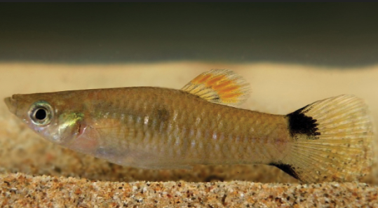
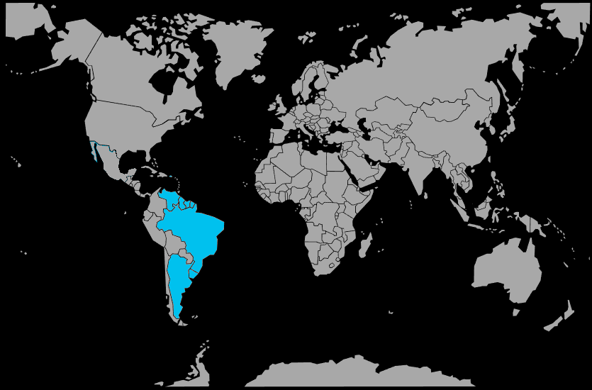

Systématique
- Ordre : Cyprinodontiformes
- Famille : Poeciliidae
- Genre : Poecilia
- Espèce : Poecilia vivipara

Poecilia vivipara est un petit vivipare euryhalin d’Amérique du Sud, dont la taille varie en général de 3 à 5 cm, avec des femelles pouvant atteindre près de 7 à 8 cm dans les milieux favorables.
Le corps est élancé, argenté à brunâtre, parfois ponctué d’une petite tâche sombre vers la base de la nageoire caudale; les populations côtières, souvent en eau saumâtre, montrent parfois une croissance plus rapide et une taille légèrement supérieure.
L’espèce vit en bancs ou en groupes diffus, principalement dans les eaux calmes de surface et de bordure, où elle explore sans cesse la végétation marginale, les racines et les zones peu profondes.
Poecilia vivipara est un poisson paisible, assez vif, qui tolère bien la cohabitation avec d’autres espèces tranquilles de petite taille, à condition de maintenir un groupe et un volume suffisants pour éviter le stress et la compétition excessive.
Son excellente tolérance à la salinité et aux variations de température lui permet d’occuper de nombreux habitats, du canal d’irrigation légèrement saumâtre aux lagunes côtières presque hypersalées.
Mode : ovovivipare; la femelle porte les œufs fécondés et donne naissance à de petits alevins autonomes, qui nagent et se nourrissent dès leur sortie.
La gestation dure généralement 3 à 4 semaines selon la température, et chaque portée peut compter plusieurs dizaines de jeunes, surtout chez les femelles les plus grandes.
Comme chez la majorité des Poeciliidae, il n’existe pas de soins parentaux; les adultes peuvent consommer une partie des alevins, mais une végétation dense et des zones peu profondes permettent aux jeunes de trouver refuge.
Dimorphisme sexuel : les mâles sont plus petits, plus sveltes, avec un gonopode à la place de la nageoire anale; les femelles sont plus volumineuses, avec une nageoire anale triangulaire et un abdomen souvent très arrondi en fin de gestation.
Espérance de vie : en aquarium, ces poissons vivent en moyenne 2 à 3 ans, parfois davantage lorsque les conditions (salinité, dureté, nourriture) sont proches de leur biotope naturel de lagunes et canaux saumâtres.
Poecilia vivipara fréquente surtout les eaux stagnantes ou très faiblement courantes: canaux, fossés, lagunes, bordures de marécages et zones de mangrove, le plus souvent légèrement saumâtres et peu profondes.
Les berges sont en général riches en végétation émergée et marginale, tandis que la colonne d’eau peut être pauvre en plantes submergées dans les secteurs les plus salés; l’espèce profite de ces habitats pour y chasser les larves de moustiques et autres petits invertébrés.
Répartition

Origine naturelle :
- Côtes atlantiques d’Amérique du Sud, depuis le Venezuela et le delta de l’Orénoque jusqu’au sud du Brésil et à l’Uruguay, Argentine.
- Présent dans de nombreuses lagunes côtières, estuaires, canaux et marécages littoraux.
L’espèce a aussi été introduite dans certaines régions pour la lutte contre les moustiques, ce qui explique sa présence ponctuelle en dehors de son aire d’origine sud‑américaine.
Paramètres de maintenance
Température : 26 à 30 °C (peut tolérer un peu en dessous, mais préfère une eau chaude stable).
pH : environ 6,5 à 7,5, de légèrement acide à neutre, avec une tendance naturelle vers le neutre en eau saumâtre.
GH : 10 à 30 °dGH, l’espèce supportant des eaux assez dures, voire très minéralisées, surtout en milieu côtier.
Salinité : supporte de l’eau douce mais se maintient particulièrement bien en eau légèrement saumâtre, ce qui peut améliorer sa longévité et sa résistance.
Courant : très faible, avec peu de remous; elle apprécie les bacs calmes, bien plantés en bordure, avec des zones peu profondes.
Volume conseillé : à partir de 100 L pour un petit groupe d’au moins 5 à 6 individus, afin de respecter son comportement grégaire.
Régime alimentaire
Régime : omnivore opportuniste; dans le milieu naturel, Poecilia vivipara consomme des larves de moustiques, petits invertébrés, micro‑crustacés, algues et débris organiques.
En aquarium, il accepte facilement les paillettes et granulés pour vivipares, complétés par des apports réguliers de nourritures vivantes ou congelées (daphnies, artémias, microvers) et un peu de végétal (spiruline, légumes pochés).
Une alimentation variée, avec une proportion correcte de végétaux, limite les problèmes digestifs et favorise une croissance régulière, des couleurs soutenues et des pontes fréquentes sans épuiser les femelles.